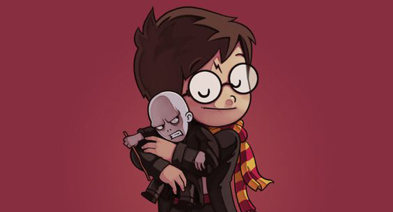

A mistura que sou
Eu sou uma grande mistura de todos os momentos que vivi, de todos os livros que li, filmes e séries que assisti, artes que admirei e músicas que ouvi.
Pode me chamar de Harry Potter, se quiser, talvez a magia exista, talvez eu tenha sido salvo pelo amor. Ou quem sabe de Dumbledore, e isto tudo está apenas acontecendo em minha cabeça? Ou a própria J.K. Rowling, quem sabe eu não tenha construído esse meu universo todo? Pode se aventurar comigo em viagens científicas como as aventuras de Robert Langdon, quem sabe não desvendamos realmente O Código da Vinci, posso te levar ao céu, ou pro Inferno. Posso ser seu Anjo, ou seu Demônio. Que tal voltar pro ensino médio e aprender umas lições que nos faltaram? Talvez 13 delas, 13 razões para olhar para dentro e evoluir pensando nas coisas mais simples que nos cercam e que alguns prererem chamar de drama (lamentável). Ou quem sabe podemos descobrir que Leonardo da Vinci tinha demônios em sua mente, que na verdade era um grandioso louco e bissexual, que pode ter chegado à América Latina antes mesmo de Cristóvão Colombo? Afinal, talvez a História que nos ensinam nos livros não sejam mesmo a versão oficial, e sim a versão que mais convém ao sistema. Podemos nos chocar com a evolução da tecnologia, afinal às vezes parecemos estar presos em espelhos negros, nunca olhando realmente pra dentro, pro que realmente somos e pensamos. Aumenta o som, olhe para as estrelas... elas não são todas amarelas, não brilham tanto para você? Talvez seja a partir dessa melodia que minha luz comece a te consertar. Afinal, isso tudo podia ser o paraíso, se quiséssemos, e se tivéssemos um pouquinho mais de coragem. Eu sei que sou homem, mas por que não me chamar de Alice? Vivo caindo em buracos, às vezes vejo coelhos apressados, correndo atrás sei lá do quê, sempre tão perdidos... que chapéu é esse que agora gosto de usar? Acho que estou ficando louco, devo me preocupar? Talvez não, afinal as melhores pessoas que conheci, são assim... doidinhas, assim como Da Vinci que citei ali em cima, lembra? Ora, às vezes me acho mesmo tão maluco que me dá vontade de viver na natureza selvagem, será que posso levar um fone de ouvido na floresta pra refletir sobre a sociedade, como nosso grande Eddie Vedder? Acho que já deu pra perceber o quanto sou confuso e mudo de ideias, mas talvez eu prefira mesmo ser essa metamorfose ambulante. Às vezes realista, às vezes romântico, mas por favor, não me insulte de parnasiano, jamais serei perfeito, e qual graça teria se eu fosse? Ah, mas a modernidade é tão linda quanto nossos sons acústicos, apesar desse pane todo no meu sistema (será que alguém me desconfigurou?), algumas coisas não precisamos explicar, só sentir: Tutz, tutz, zahsusjajjs e todos esses sons aí que não sabemos explicar, mas são formados graças aos conhecimentos eletrônicos, e que energia incrível e curiosa nos despertam (aos que souberem apreciar, é claro). Ou talvez me chame de Pequeno Príncipe, porque hoje em dia, mesmo sendo ainda tão pequeno, já aprendi a deixar ir... e espero mesmo ser eternamente responsável por aquilo que cativo (procuro sempre cativar coisas boas).

Oceanos em jarras
Eu sempre fui o tipo de pessoa que transborda sentimentos, que exagera nos pensamentos, que sonha além do considerado possível. Talvez eu tenha nascido com essa mania de colocar o “demais” nas coisas que vêm de dentro. E, sinceramente, sempre preferi acreditar que essa era uma qualidade, que eu sempre enxergaria além… por não me limitar, por sentir mais a energia das pessoas, as lembranças… por pensar mais nas lições que a vida nos dá. E me entreguei demais a todas as coisas que me fizeram bem, a todas as pessoas a quem considerei. E as assustei. E me assustei. Aprendi que tem gente que não sabe lidar com o “demais”. Que há coisas que deixam de dar certo se entramos de cabeça demais. Tem gente que desaprende a gostar de nós quando percebem nossa falta de limites nos sentimentos, e se bloqueiam… se afastam, mesmo sem querer. E assim me perdi de muitas coisas, de muitas pessoas, de muitos sonhos. Me perdi nas minhas próprias linhas de raciocínio. E hoje vivo sempre tentando demonstrar menos do que sou, menos do que sinto, menos do que quero. Pra ver se assim algo decide ficar, pra ver se assim algo finalmente dá certo com um pouco mais de equilíbrio. E confesso: não existe nada mais difícil do que tentar transformar em sussurro o que aqui dentro está falando tão alto. Não existe nada mais doloroso do que se sentir obrigado a colocar o oceano inteiro dentro de uma jarrinha de água, por medo de morrer (e matar) afogado.